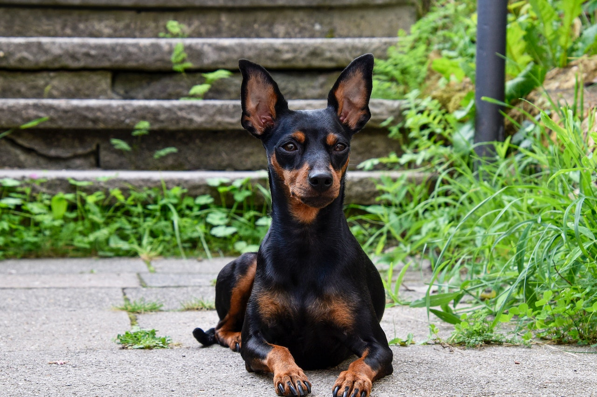

O Pinscher segue a risca a expressão popular “tamanho não é documento”. Conhecido pela sua energia inesgotável e seu latido, o cãozinho de – no máximo – 30 centímetros, demonstra toda a sua braveza quando percebe algo de errado ao seu redor. Diferente de outras raças de pequeno porte, o Pinscher é um excelente guardião. Seus grandes olhos escuros estão em alerta a todo momento. Mesmo que seja a escolha de muitos moradores de apartamentos e casas compactas, o pet adora espaço para correr e gastar toda a sua energia.
Pinscher
Energia é seu
sobre nome

A disposição que os pinschers possuem vão contagiar todos ao seu redor.
Condição Fisica
Apesar do tamanho pequeno dos cachorros da raça Pinscher, eles possuem um temperamento marcante: são ousados,Apesar do tamanho pequeno dos cachorros da raça Pinscher, eles possuem um temperamento marcante: são ousados, corajosos, curiosos e extremamente apegados às pessoas que convivem junto com eles.

Características
expectativa de vida
15
anos

média de peso
6kg
Média de altura
30 Cm
Nível de fofura
Alto
É adaptável?
Requer atenção?
Apartamento?
Late muito?
Gosta de gatos?
Gosta de crianças?
Gosta de cães?

Precisa exercitar?
É espaçoso?
Fácil tosar?
Problemas saúde?
É inteligente?
É Gosta de brincar?
Cai muito pelo?
É sociável?
É amigavel?

É territorialista?

Fácil de treinar?
É cão de guarda?
É friorento?
É calorento?
Características fisícas
O Pinscher é reconhecido pelo seu tamanho pequeno e sua pelagem curta, lisa, densa e brilhante. Para evitar a queda de pelos por toda a sua casa, escove diariamente o seu pet com acessórios específicos para a raça. A pelagem pode ser unicolor: vermelho cervo ou vermelho castanho. Ou bicolor: preto e castanho.
Compacto, o Pinscher possui um crânio achatado. A arcada dentária afiada é em formato de tesoura. O focinho, preto, é pontudo. As orelhas são pontudas e dobradas. Os olhos ovais são escuros e sempre em alerta. O cãozinho, em sua vida adulta, pode ter de 25 até 30 centímetros e com o peso entre 4 e 6 quilos.
Destaque e curiosidade
temperamento do pinscher

O temperamento do Pinscher vai variar do treinamento e da socialização que o seu companheiro for submetido desde filhote. Geralmente eles costumam latir para estranhos ou em situações que eles consideram de risco, mas essa é uma característica de cão guardião que ele possui. No fundo eles são amorosos e adoram brincar com os seus tutores.
popularidade
As telinhas nunca foram o forte do Pinscher. Porém, esse fator não diminuiu nem um pouco a popularidade da raça. O cãozinho está entre as raças favoritas na Europa, Estados Unidos e aqui no Brasil também.
artes
O Pinscher já fazia sucesso há mais de 300 anos. Historiadores encontraram em pinturas do século 17 cãezinhos que se assemelhavam ao Pinscher Miniatura. Já, no século 19, mais pinturas com o pet foram localizadas. Comprovando que seu sucesso é de longa data.

historia do pinscher
origem
Apesar de possuir muitas semelhanças, o Pinscher não é uma miniatura do Doberman, uma vez que o cãozinho é mais velho que seu primo maior. Sem muitos vestígios do seu surgimento, especialistas consideram a Alemanha como país de origem da raça. No início, por conta do seu tamanho compacto, o cãozinho se destacou por ser um exímio caçador de roedores.
nome de batismo
Extremamente popular na Alemanha antes da Primeira Guerra Mundial (1914-1918), com o fim da batalha houve uma drástica redução da raça no país. No entanto, a essa altura, alguns criadores norte-americanos já contavam com alguns Min Pins — apelido da raça. No Reino Unido e na França o cãozinho chegou a partir de 1950.
ofícios
O Pinscher Miniatura era chamado apenas de Pinscher (Toy) na América até em 1972, quando recebeu seu novo nome de batismo – esse que conhecemos hoje em dia. Já, na Alemanha, seu país de origem, o pet é ganhou a alcunha de Zwergpinscher, que significa nada mais, nada menos do que anão mordedor.
o popular
Com muitos seguidores na Europa e nos Estados Unidos, aqui no Brasil a fama do cãozinho não é diferente. Entre os mais populares no país, o Pinscher fica atrás apenas do Shih Tzu e Poodle, completando o ranking das raças favoritas dos brasileiros.
Personalidade
O Pinscher é dono de uma personalidade forte. E os cãezinhos dessa raça são conhecidos por serem, principalmente, destemidos e estarem sempre em alerta. Apesar do pouco tamanho, é comum ver o pet partindo para cima de outros cães, quase sempre maiores que eles, quando se sentem ameaçados.
A lealdade ao seu tutor também é outra característica da personalidade marcante desse pequeno cão de guarda. O cãozinho sempre estará como um guardião para tentar protegê-lo — mesmo que você não esteja correndo nenhum risco.
Personalidade que tem exceções à regra e que é importante sempre trabalhar socialização e adestramento de forma correta.
Convivência
A energia presente no Pinscher dá a ele uma expectativa de alta interação com seu tutor. Mas, quando não é correspondido, o cãozinho fica desanimado e um um tanto quanto irritado. Portanto, é muito importante que o tutor dedique um tempo do seu dia para realizar brincadeiras com seu pet!
Já a interação com outras raças ou outras espécies de animais, como gatos, não é o ponto forte do Pinscher. Para que o tutor não tenha problemas de convivência com seus cãezinhos e os outros pets, é muito importante existir uma interação desde filhote.
socialização
Assim como a relação com outros pets, à primeira vista, o Pinscher não se mostra tão amigável com estranhos ou crianças. Porém, não há segredo. Com uma socialização do cãozinho desde cedo, essa questão será resolvida rapidamente.
Muito brincalhão, realizar diversas brincadeiras com o pet pode ser uma das formas mais simples de socialização do animal com outras pessoas. Caso o seu cãozinho apresente dificuldades, é importante contar com um profissional para auxiliar no treinamento de interação.